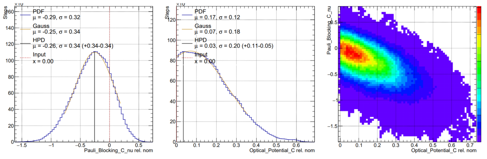
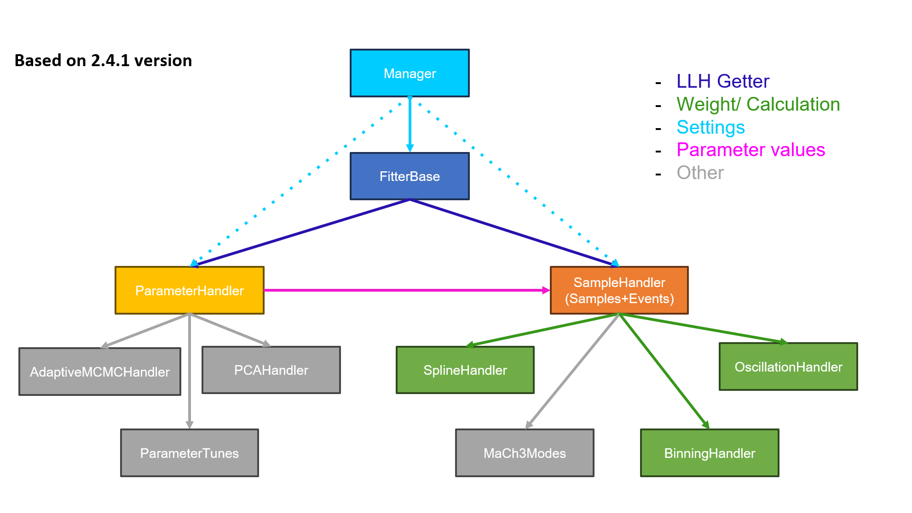

FAQ#
General#
How to start?#
If this is your first time using MaCh3, we recommend starting with MaCh3 Tutorial
What is burn-in#
Burn-in is the initial part of an MCMC chain where the sampler has not yet reached its stationary (equilibrium) distribution. Thus this part is often discarded.
How much burn-in should I use?#
There is no universal answer. Burn-in depends on the model complexity, parameterisation, and tuning. Useful to investigate LogL, parameter traces etc. It is better to set larger rather than smaller burn-in.
A good practice is to inspect trace plots and remove the initial transient region before the chain reaches its stationary distribution.
Why is my fit not converging?#
MCMC is not a magical black box, and it often requires tuning for better convergence. We recommend reading more about step-size tuning.
My HPD is shifted with respect to Asimov point#
First instinct is that this is results of fit not converging. However, there are other explanation of such phenomena.
Marginalisation#
If we have two highly correlated parameters and one of them has restrictive physical boundaries (for example allowed values are 0 or 1, and the expected value is close to 0), then this can manifest in marginalisation. When you diagnose 1D posterior, it is marginalised over all other dimensions. Aforementioned parameters with boundary often have non-Gaussian distribution. When we marginalise, it often cuts distribution. It is best seen in the below example.

Degeneracy#
If multiple parameters produce similar changes in the likelihood (for example by affecting the same bins in a similar way), the fit may contain degeneracies. In such cases, the posterior can become broad or multi-modal, making convergence slower and causing apparent shifts from the Asimov point.
I have on the order of thousands of parameters#
In contrast to the standard algorithm, MCMC is significantly more efficient when dealing with a large number of parameters. When using step-size tuning or adaptive, one needs to be more careful. It is also necessary to generate additional steps in order to obtain a sufficient number of chain statistics.
Can I continue an existing chain?#
Yes. Continuing a chain can be useful to accumulate more steps with while being restricted by cluster job time slots.
Glossary/Jargon#
MCMC: Markov Chain Monte Carlo — a class of algorithms used to sample from a probability distribution using a Markov chain.
MR2T2: Metropolis–Rosenbluth–Rosenbluth–Teller–Teller algorithm — most common MCMC algorithm
Spline: A interpolation function used to parameterise detector or physics responses as a function of fit parameters.
Common Errors#
If an error does not show up here the best solution is to use GDB or ask in your experiment’s MaCh3-Debug channel.
Request to expand to a negative size#
Fatal in <TBufferFile::AutoExpand>: Request to expand to a negative size, likely due to an integer overflow: 0x800bb891 for a max of 0x7ffffffe.
aborting
This is a very common error. The first thing to check is whether your chain has accepted any steps; this is the typical cause!.
Software#
Is MaCh3 MCMC only?#
MaCh3 does support non Markov Chain fitting algorithm. However, they are predominantly used to support MCMC or as cross-validation tool.
Error: Need MACH3 environment variable#
Some functionalities rely on setting Env{MACH3} which should point to path experiment specific MaCh3. This way MaCh3 can easily find Env{MACH3}/inputs/SomeInput.root for example. Safest approach is to include this in experiment specific cmake
This is an example of T2K setup.MaCh3T2K.sh.in
export MACH3T2K_ROOT=@CMAKE_INSTALL_PREFIX@
export MACH3=@CMAKE_INSTALL_PREFIX@
export MaCh3T2K_VERSION=@MaCh3T2K_VERSION@
add_to_PATH "${MACH3T2K_ROOT}/bin"
add_to_LD_LIBRARY_PATH ${MACH3T2K_ROOT}/lib
I’ve logged back into my cluster and I can’t run my app. Do I have to resource the setup script?#
Yes. Setup scripts add MaCh3 libraries and environment variables to your shell “common path”. When you log out from a cluster session, this environment is reset.
Each time you log into the cluster, you must re-source the setup script before running MaCh3.
I’ve followed the build instructions for an experiment repo, but I don’t know where the core MaCh3 build lives.#
During cmake step, experimental specific MaCh3 clones (via CPM). You can find the MaCh3 source code in: <path_to_build>/_deps/mach3-src/
I’ve changed my config in the build/configs directory, and I’ve rebuilt my code and the changes I made have been overwritten.#
When you run make install, CMake copies files from the source directory into the build/install directory. This includes configuration files.
If you modify configuration files inside the build directory, those changes will be overwritten the next time you run make install.
Where do I run the code from? From the top-level directory, from the build directory?#
MaCh3 can be run from any directory.
However, the safest approach is to run from the build/ directory, as most analysers follow this convention and configuration files are typically prepared with this assumption.
If you choose to run from a different directory, you must ensure that all configuration paths (e.g. inputs, outputs, and external files) are correctly set relative to your working directory.
Why step time is multimodal?#
Step time usually have two peaks, one very small and second overall larger. These super quick steps correspond to proposal resulting in parameter being out of physical bounds. In such case MaCh3 reject without actual reweight which results in very quick step.
Do I need GPU to use MaCh3#
No, MaCh3 works with a CPU-only setup. In fact, MaCh3 is predominantly a CPU library. Only most performance intensive operations have GPU support to accelerate. We make rigorous checks to make sure the CPU and GPU produce the same results up to numeric precision.
Version#
MaCh3 is version controlled. You can find all releases here and read the release notes.
Code Structure#
Last updated: 27 Feb 2026
